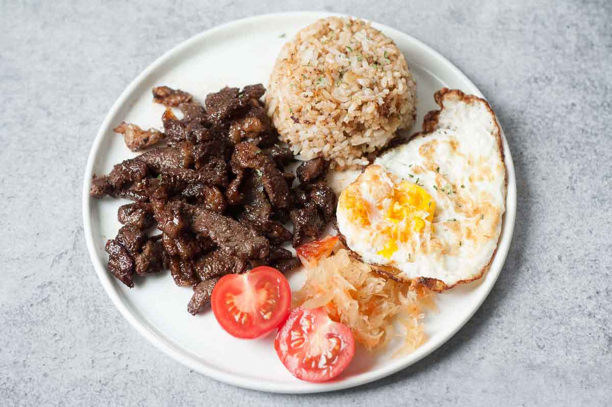
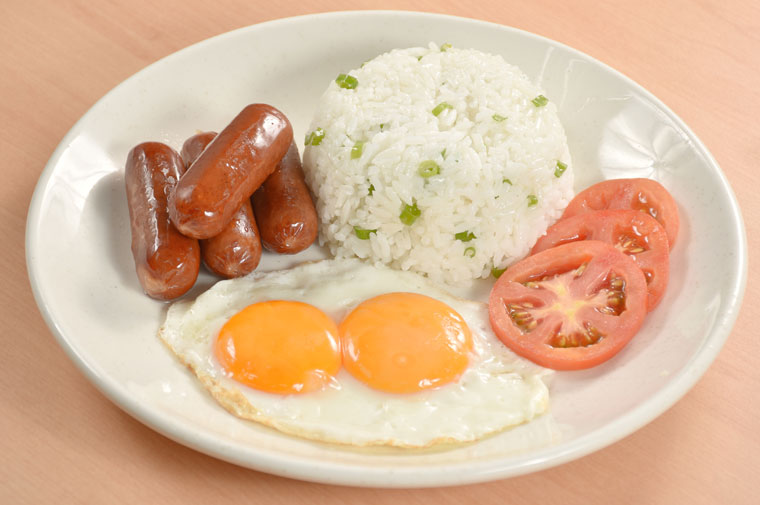
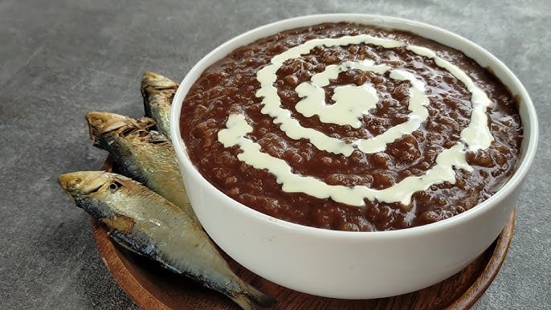
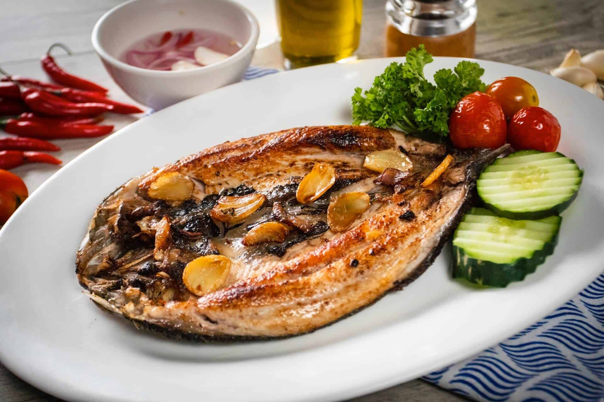

Tapsilog
Ingredients:
- 200g beef tapa
- 1 cup garlic fried rice
- 1 fried egg
Instructions:
- Marinate beef with soy sauce, vinegar, and garlic. Cook until tender.
- Serve with garlic fried rice and a fried egg.
Season: Ideal year-round for a satisfying breakfast.

Longsilog
Ingredients:
- 200g longganisa (sweet sausage)
- 1 cup garlic fried rice
- 1 fried egg
Instructions:
- Fry longganisa until fully cooked.
- Serve with garlic fried rice and a fried egg.
Season: Perfect during cool mornings for a cozy meal.

Champorado
Ingredients:
- 1 cup glutinous rice
- 4 cups water
- 1/2 cup cocoa powder
- Sugar to taste
Instructions:
- Boil rice with water until soft.
- Add cocoa powder and sugar. Stir well.
Season: Best enjoyed during rainy days.

Arroz Caldo
Ingredients:
- 1 cup glutinous rice
- 6 cups chicken broth
- 1 chicken breast
- 2 cloves garlic, minced
- 1 thumb-sized ginger, sliced
Instructions:
- Sauté garlic and ginger. Add chicken and cook until tender.
- Add rice and broth. Simmer until thickened.
Season: Ideal during cold mornings or rainy days.

Daing na Bangus
Ingredients:
- 1 milkfish (bangus), butterflied
- 1/4 cup vinegar
- 2 cloves garlic, minced
- Salt and pepper to taste
Instructions:
- Marinate bangus in vinegar, garlic, salt, and pepper overnight.
- Fry until crispy and golden brown.
Season: Great for summer mornings.

Tortang Talong
Ingredients:
- 2 large eggplants
- 2 eggs
- Salt and pepper to taste
Instructions:
- Roast eggplants until charred. Peel off the skin.
- Flatten the eggplant and dip it into a beaten egg mixture.
- Pan-fry until golden brown.
Season: Great during rainy seasons.